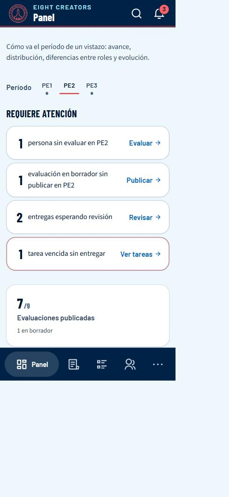
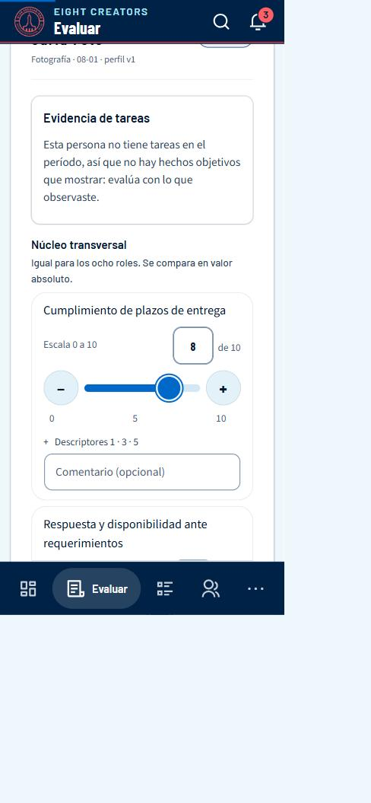
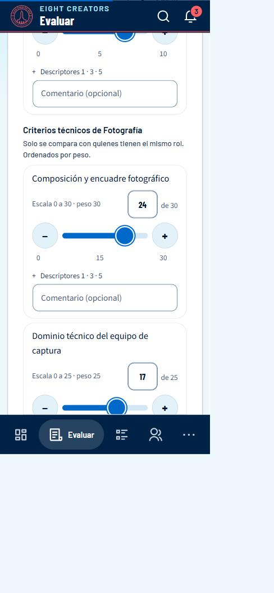
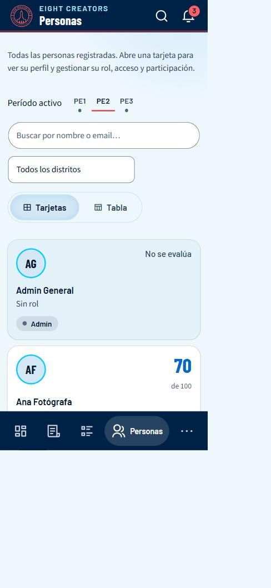
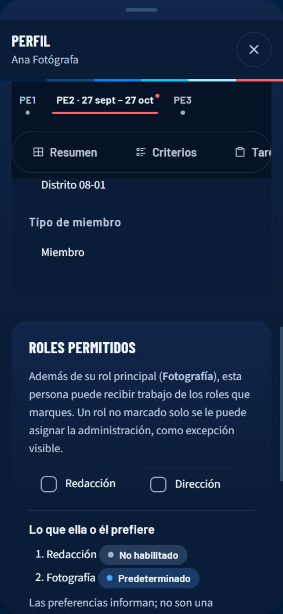
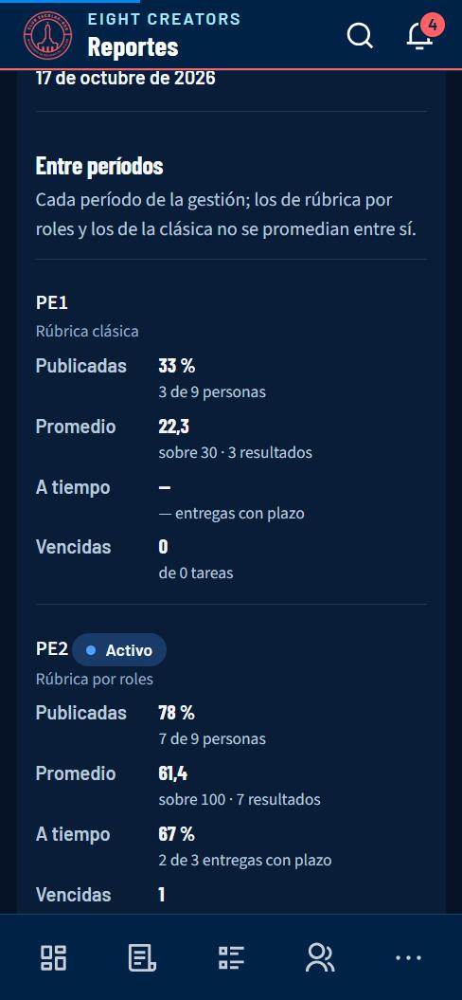
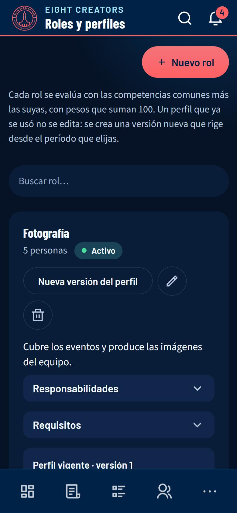
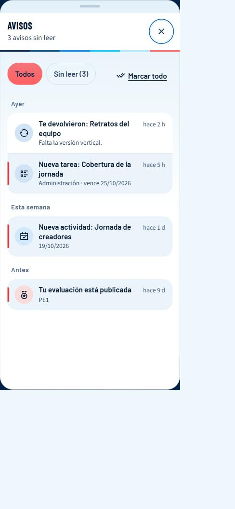
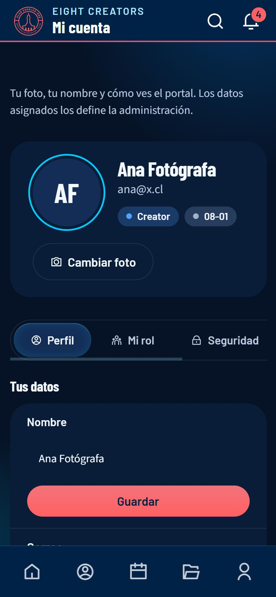

EIGHT CREATORS LABs · CELIDER 08 Santiago
Manual para administración
Cómo gestionar el portal de EIGHT CREATORS LABs
Tienes el control completo: personas, evaluaciones, tareas, calendario, reportes y la configuración de la rúbrica. Este manual separa lo que usas cada día (operación) de lo que configuras de vez en cuando.
Las capturas son del entorno de pruebas del portal con datos de ejemplo (nombres y cifras inventados). Si lees este manual en computadora verás las capturas de computadora; en el celular, las de celular.
1Entrar y moverte por el portal
La dirección del portal es eight-coms.vercel.app. Funciona en cualquier navegador moderno, en computadora y en celular.
Crear tu cuenta
- Abre el portal y toca Crear cuenta.
- Escribe tu nombre, tu correo y una contraseña. La barra de seguridad te dice si es débil o fuerte.
- Revisa tu correo y pulsa el enlace de Confirmar mi correo. Si no llega, mira en «Spam».
- Espera la aprobación de la administración: hasta entonces, al entrar verás un aviso de que tu acceso está pendiente. Cuando te aprueban, te llega un correo y ya puedes entrar.
Iniciar sesión y recuperar la contraseña
- En Entrar escribe tu correo y tu contraseña.
- Si la olvidaste, toca Olvidé mi contraseña: te enviamos un código de verificación de 6 cifras. Escríbelo y elige la nueva clave.
Cómo está organizado
En computadora
El menú vertical azul de la izquierda lleva a cada sección. Arriba tienes Buscar (atajo Ctrl + K) para saltar a una persona o sección. Abajo, tu nombre abre Mi cuenta, y los iconos sirven para cambiar el tema (claro/oscuro) y salir. El botón Avisos muestra cuántos avisos tienes sin leer.
En celular
Arriba hay una cabecera con el nombre de la pantalla, la lupa (buscar) y la campana (avisos). Abajo, una barra de iconos: solo el destino en el que estás muestra su nombre; los demás son solo icono. El último botón (Más o Cuenta) abre un panel con el resto de secciones, tu cuenta, el tema y Cerrar sesión. Ese panel se cierra con la X, tocando fuera o arrastrando la rayita de arriba hacia abajo.
Instalar el portal como una app
Puedes tenerlo en la pantalla de inicio de tu celular, con su icono, sin la barra del navegador.
En computadora
En Chrome o Edge, usa el icono de instalar de la barra de direcciones, o el menú ⋮ → «Instalar EIGHT CREATORS LABs».
En celular
Android (Chrome): abre Mi cuenta → Instalar en tu celular y acepta. Si no aparece el cuadro, menú ⋮ → «Instalar app». iPhone (solo Safari): toca el botón Compartir (el cuadro con la flecha hacia arriba) → Añadir a pantalla de inicio. En iPhone, Chrome y otros navegadores no pueden instalarla.
2Bienvenida y novedades
Hay dos recorridos y los dos se abren solos una vez. Si ya usabas el portal, ves Novedades del portal: describe cada rol, roles permitidos por persona, Nueva tarea con rol por persona, actividades para el equipo, un distrito o personas y seguimiento y reportes entre períodos. Si llegas ahora, ves la bienvenida:
La bienvenida es una guía de cinco pasos: revisar los períodos, describir los roles y sus perfiles, aprobar accesos y asignar rol y distrito, hacer tu primera evaluación y mirar el seguimiento global. Cada paso te lleva a la pantalla; tu avance queda guardado y el Panel muestra la tarjeta Primeros pasos con Continuar hasta que termines (o digas Ahora no). Se repasa desde Mi cuenta → App → Bienvenida.
Cada recorrido tiene su versión para creator, secretaría y administración, y cada persona retoma donde quedó. En Mi cuenta → App puedes repasarlo. Las personas que ya usaban el portal cuando se aplicó la actualización 0025 reciben las novedades; quienes se registren desde entonces, la bienvenida.
3Entrar al panel: gestión y período
Al abrir el panel, una ventana pregunta ¿Con qué vas a trabajar?: la gestión (el año de trabajo) y el período. Eso evita que veas datos de un período cuando creías estar en otro.
- Elige la gestión y el período.
- Toca Entrar (o Usar el período activo).
- Marca No volver a mostrar esto si quieres que se acuerde. Para volver a verla, en Configuración está el botón para restablecer la entrada.
4Panel: lo que necesita atención
Abre con Requiere atención: solo hechos, cada uno con un enlace a donde se resuelve.

- Personas sin evaluar en el período → Evaluar.
- Evaluaciones en borrador sin publicar → Publicar.
- Entregas esperando revisión → Revisar.
- Tareas vencidas sin entregar → Ver tareas.
- Accesos pendientes de aprobar → Personas.
Más abajo hay gráficas (avance, niveles, comparación por rol o distrito, tendencia entre períodos, mapa de calor persona × competencia). Cada una responde una pregunta; son para calibrar, no puntúan nada.
5Evaluar
Es la pantalla central. Arriba están el período, la búsqueda, los filtros de rol y distrito y los estados (Todas, Pendientes, Borrador, Publicadas). En computadora, la lista va a la izquierda y el formulario a la derecha; en celular, el formulario aparece debajo de la lista y la pantalla baja sola hasta él al elegir a una persona.
Evaluar a una persona (rúbrica por roles)
- Elige el período y toca a la persona. Arriba del formulario ves su rol y la versión de su perfil.
- Revisa la evidencia de tareas: lo entregado a tiempo, devoluciones, iniciativa. Son hechos para ayudarte; no puntúan ni rellenan nada por ti.
- Puntúa el núcleo transversal (5 criterios iguales para todos) y los criterios técnicos del rol.
- Escribe comentarios si quieres y completa los campos de registro (sí/no, opciones, texto) que existan.
- Mira el contador «N de M obligatorios». Guarda como Borrador cuantas veces quieras; Publicar solo se habilita cuando están completos los obligatorios.

La barra de puntos
Cada criterio se puntúa de 0 hasta su propio peso. Un criterio técnico con peso 30 va de 0 a 30; uno con peso 15, de 0 a 15; los criterios del núcleo, de 0 a 10. La escala se ve debajo del nombre («Escala 0 a 30 · peso 30»).
| Para… | Haz |
|---|---|
| Mover el valor | Arrastra la bolita de la barra con el dedo o el cursor. |
| Elegir un número exacto | Escríbelo en la casilla de la derecha (si te pasas del máximo, se corrige solo). |
| Ajustar de a uno | Toca − o +. Desde «sin puntuar», + empieza en 1 y − en 0. |
| Dejarlo sin puntuar | Borra el número de la casilla. «Sin puntuar» no vale 0: el criterio queda fuera del cálculo. |

El resultado sale de la base de datos: técnico = suma de puntos · 100 / suma de pesos de los criterios puntuados (si puntúas todos, es la suma de puntos); núcleo = promedio de (puntos / 10); individual = 60 % técnico + 40 % núcleo.
Períodos con la rúbrica clásica
Los 7 criterios se puntúan del 0 al 4, más el bono de excelencia (0 a 2), también con la barra.
6Personas
Una tarjeta por persona (también existe la vista Tabla). Busca por nombre o correo y filtra por distrito.

- Toca una tarjeta: se abre su perfil y una pestaña extra, Gestión.
- En Gestión asignas rol, distrito, tipo de acceso (Creator, Secretario), acceso aprobado, administración, los roles permitidos, su participación en el período y puedes eliminar a la persona.
- Para un registro nuevo: abre su tarjeta, asígnale rol y distrito y activa Acceso aprobado. Le llega un correo.
Roles permitidos y preferencias
En Gestión → Roles permitidos marcas, además del rol principal, los roles que esa persona puede asumir. Cada casilla se guarda al marcarla. Debajo ves lo que la persona prefiere (el orden que ella eligió y su rol predeterminado), solo para informar.

- El rol principal define con qué perfil se evalúa a la persona. Los permitidos definen con qué roles se le pueden asignar tareas.
- Una preferencia no concede ni quita nada: una persona puede preferir un rol que no tiene permitido (aparece como «No habilitado»).
- Si quitas un rol permitido que la persona tenía como predeterminado, se limpia el predeterminado, pero su preferencia se conserva.
- Los roles funcionales (administración, secretaría, miembro) son otra cosa y se cambian con Administradora y Tipo de miembro.
7Tareas
Funciona igual que para la secretaría (ver su manual para los tres pasos y los avisos de Nueva tarea), pero ves y asignas a todas las personas. Con una diferencia: si eliges un rol que la persona no tiene habilitado, no se bloquea; se avisa y, si confirmas, la tarea se crea como excepción y queda marcada «Excepción de rol» en la tarjeta. El cambio de rol de una tarea queda en su historial. Puedes asignar, revisar (aprobar con puntos de 0 a 10 o devolver con observación), mover plazos con motivo y ver el historial. Eres la única persona que puede corregir los puntos de una tarea ya aprobada, y reabrir una tarea borra sus puntos.
8Calendario y actividades
Calendario reúne fechas de períodos, actividades y tareas. Desde un día puedes crear una actividad o asignar una tarea. Una actividad tiene título, fecha (o rango), un tipo (la etiqueta, que le da color) y para quién es.
| Para quién | Quién la ve | Quién puede crearla |
|---|---|---|
| Todo el equipo | Todas las personas | Solo administración |
| Un distrito | Las personas de ese distrito (y su secretaría) | Administración; la secretaría, solo de su distrito |
| Personas y equipos | Solo las personas elegidas, quien la creó, la administración y la secretaría del distrito de esas personas | Administración; la secretaría, solo con personas de su distrito |
- Abre Configuración → Actividades y toca Nueva actividad (o, desde el calendario, Nueva actividad en un día).
- Título, descripción, Tipo y fechas. En Para quién elige Todo el equipo, Un distrito (y cuál) o Personas y equipos.
- Con Personas y equipos usas el mismo selector que en las tareas: buscas, filtras por Todos / Equipos / Personas y marcas un equipo (por distrito o por rol) o personas sueltas. Una frase te dice a cuántas personas se avisará.
- Guarda. Las destinatarias reciben un aviso (y otro la víspera); quien no es destinataria no la ve en su calendario.
La lista de actividades dice, en cada una, a quién alcanza («Todo el equipo», «Distrito 08-01», «3 personas elegidas»). En Configuración → Actividades también administras los tipos (etiquetas: nombre y color de una paleta fija).
9Seguimiento: todos los períodos, por rol
Seguimiento (menú izquierdo, entre Personas y Calendario) pone a todas las personas frente a todos los períodos de la gestión, agrupadas por rol. Es la forma de ver de un vistazo quién está al día, quién arrastra pendientes y cómo se movió cada rol.
- Indicadores: evaluaciones publicadas (personas con evaluación publicada ÷ personas que participan, en los períodos ya en juego), entregas a tiempo (entregadas dentro del plazo ÷ entregadas con plazo, sobre la primera entrega) y tareas vencidas. Cada uno dice su «N de M»; el desplegable «¿Cómo se calcula?» lo explica.
- Filtros: persona, distrito, rol y Solo con pendientes.
- Un grupo por rol (se pliega) con una columna por período. Cada celda: el resultado con su nivel, o el estado («Borrador», «Sin publicar», «Sin evaluar», «No participa») y los hechos de las tareas. Toca un nombre para abrir el perfil.
- A ti, como administración, se te muestran también los borradores (marcados); a las secretarías y a los miembros, no.
- Rúbrica por roles (sobre 100) y rúbrica clásica (otra escala) van separadas: nunca se promedian ni se comparan.
Quién ve qué lo decide la base de datos: tú ves todo; una secretaría, solo su distrito; un miembro, solo su propio historial (en su Mi perfil → Evolución).
10Reportes
- Abre Reportes.
- Elige el período, el alcance (equipo, distrito, rol o una persona) y las secciones que quieres.
- Revisa la hoja que se genera. Descargar PDF usa el tema claro; Exportar CSV descarga el ranking para una planilla.
Secciones
| Sección | Qué muestra |
|---|---|
| Resumen · Ranking · Por rol · Por competencia | Los cortes del período elegido. |
| Detalle por persona · Evidencia de tareas · Sin evaluar | Fortalezas y margen de cada persona, los hechos de sus tareas y quién falta. |
| Entre períodos | Cada período de la gestión: evaluaciones publicadas («7 de 9 personas»), promedio, entregas a tiempo («2 de 3») y tareas vencidas; y el promedio por rol de un período a otro. |
| Por actividad | Las tareas vinculadas a cada actividad: entregadas ÷ asignadas, a tiempo ÷ con plazo, aprobadas ÷ entregadas, vencidas y puntos promedio. |

Los cuadros Entre períodos y Por actividad respetan el alcance que elijas (un distrito, un rol, una persona) y cada uno tiene su botón Descargar este cuadro (CSV), con numerador y denominador en columnas separadas. Un denominador en 0 se muestra «—», nunca 0 %. Los resultados de la rúbrica por roles los calcula la base de datos; el reporte solo los presenta.
11Configuración
Está agrupada bajo Configuración (menú izquierdo) o en Más (celular).
Períodos
- + Nuevo período: nombre → modelo (Rúbrica por roles o Clásico) → fechas en orden (inicio ≤ fin del trabajo ≤ entrega ≤ jornada) → ¿activo?
- Para cambiar el período activo, usa la acción de activar: solo uno puede estar activo.
Rúbrica y criterios
Hay dos pestañas: Por roles y Clásica. En Por roles, el núcleo es común y las competencias técnicas se asignan por rol. Con la actualización de criterios dinámicos puedes:
- Crear criterio: nombre, descripción, grupo (núcleo o técnico), tipo de campo (escala, sí/no, opciones, texto), si es obligatorio y las descripciones de los niveles 1, 3 y 5.
- Editar, Ordenar (↑ ↓), Desactivar o Eliminar.
- Un criterio que alguna evaluación ya usó no se elimina (solo se desactiva) ni cambia de tipo.
- Desactivar no reescribe lo ya evaluado: las evaluaciones que lo tienen se siguen guardando.
- Los campos sí/no, opciones y texto son de registro: se guardan pero no puntúan.
- Los criterios técnicos son siempre de escala (su peso es lo que suma 100).
Roles y perfiles
Una tarjeta por rol con su descripción, sus responsabilidades y requisitos (se despliegan) y su perfil vigente: la barra apilada de pesos y las versiones anteriores.

- Toca el lápiz de un rol (o + Nuevo rol).
- Escribe Qué hace este rol (una o dos frases), Responsabilidades (una por línea) y Requisitos.
- Guarda. Esos textos se muestran a quien recibe una tarea con ese rol, en la asignación y en la bienvenida y en Mi cuenta de cada persona.
Para el perfil de evaluación: para cambiar pesos, crea una versión nueva: los pesos técnicos deben sumar exactamente 100. Un perfil que ya usó alguna evaluación es inmutable; la versión nueva rige desde un período que aún no tenga evaluaciones de ese rol. Desde el diálogo del perfil también puedes Crear criterio.
Distritos y Gestiones
- Distritos: crea y ordena los distritos que se asignan a las personas.
- Gestiones: el año de trabajo. Abrir gestión crea la nueva, clona el catálogo de criterios y la última versión de cada perfil, y archiva la anterior. Si no hay una gestión abierta, el registro de cuentas nuevas se cierra.
12Avisos (la campana)
Todo lo que te llega por correo también aparece en la campana, con su estado de leído / sin leer. Es la misma información: no se inventan avisos aparte.
- Toca la campana 🔔 de la cabecera (en computadora: Avisos en el menú de la izquierda). Si tienes avisos sin leer, verás un número en rojo.
- Se abre el panel Avisos: agrupados en Hoy / Ayer / Esta semana / Antes, con un icono por categoría (tareas, evaluaciones, actividades, accesos) y cuánto hace que ocurrieron. Los sin leer tienen fondo tenue, una barra a la izquierda y el título en negrita.
- Toca un aviso: se marca como leído y te lleva a la sección donde se resuelve (por ejemplo, una tarea devuelta te lleva a Entregas).
- Usa Sin leer para ver solo los pendientes y Marcar todo para dejarlos todos como leídos. Ver avisos anteriores carga más.

| Si ves… | Significa |
|---|---|
| Solicitud de acceso | Alguien se registró y espera que apruebes su acceso (Personas). |
| «Fulana entregó: …» | Hay una entrega esperando revisión (Tareas). |
| Tarea bloqueada | Alguien marcó que espera algo (Tareas). |
| Faltan evaluaciones por publicar | Aviso 3 días antes de la entrega de scores del período activo (Evaluar). |
| Nueva actividad · Mañana: … | Una actividad agregada al calendario, o la de mañana. |
13Mi cuenta
Es tu espacio personal. Se abre con tu nombre (computadora) o desde Más → tu nombre (celular). Arriba están tu foto, tu nombre y tus etiquetas (tipo de acceso y distrito); debajo, cuatro pestañas para que veas una cosa a la vez. El portal recuerda la última que usaste.
| Pestaña | Qué hay |
|---|---|
| Perfil | Tu nombre (con Guardar), tu correo, tu tipo de acceso y tu distrito (estos tres los asigna la administración), y Tu tarjeta: el fondo de tu perfil, elegido entre los siete patrones de la marca. |
| Mi rol | Tu rol principal con sus responsabilidades y tus preferencias de rol (no aparece para la administración, que no se evalúa). |
| Seguridad | Cambiar la contraseña: mínimo 8 caracteres, distinta de la actual. |
| App | El tema (claro u oscuro), instalar el portal en tu celular, la bienvenida o las novedades, la ayuda y Cerrar sesión. |
- Cambiar foto: elige cualquier imagen del teléfono o la computadora; no importa su tamaño. El portal la recorta en cuadrado y la reduce solo (queda ligera, de pocos KB).
- Perfil → Nombre: escríbelo y toca Guardar.
- Perfil → Tu tarjeta: elige un fondo o Auto. Lo ven también quienes pueden abrir tu perfil (tu secretaría y la administración).
- Seguridad: Nueva contraseña y Repite la contraseña → Cambiar contraseña.
- App: Tema, Instalar en tu celular (ver «Entrar y moverte») y Cerrar sesión.

Correo, tipo de acceso y distrito aparecen en «Tus datos» solo para que los veas: los asigna la administración.
14Próximamente
Estas mejoras están en camino. Mientras llegan, cada una tiene su alternativa:
- Roles dentro de una actividad. Próximamente. Por ahora una actividad lleva destinatarios (equipo, distrito o personas) y el rol se elige al asignar cada tarea.
- Habilitar roles en bloque. Próximamente. Por ahora los roles permitidos se marcan persona por persona, en Personas → Gestión.
- Seguimiento y reportes entre gestiones. Próximamente. Por ahora son de una gestión a la vez: cambia de gestión al entrar al panel.
- Exportación nativa a Excel (.xlsx). Próximamente. Hoy tienes la hoja imprimible/PDF y el CSV, que Excel abre sin problema.
- Solicitud de rol desde la persona. Próximamente. Hoy la persona declara sus preferencias y tú decides si le habilitas el rol.
15Qué depende de actualizaciones de la base de datos
Algunas funciones necesitan una migración aplicada en Supabase (se aplican a mano, en orden). Si falta, la pantalla lo avisa o se comporta como antes:
| Función | Migración | Si no está aplicada |
|---|---|---|
| Rúbrica por roles, tareas, puntos por tarea | 0015, 0016, 0017 | El portal usa solo la rúbrica clásica. |
| Actividades y etiquetas | 0018 | El calendario funciona sin actividades. |
| Avisos por correo | 0019 | No se envían correos de avisos. |
| Criterios dinámicos (crear/editar/ordenar/desactivar/eliminar y campos de registro) | 0020 | El catálogo se ve pero no se edita. |
| Campana y avisos dentro de la plataforma | 0022 | La campana explica que los avisos aún no están activos. |
| Puntos por peso (barra de 0 a su peso) | 0023 | Se evalúa de 1 a 5, como antes. |
| Descripción de los roles, roles permitidos, preferencias y rol en cada tarea | 0021 | Esos campos no aparecen; la asignación de tareas sigue por persona, sin rol. |
| Actividades «para personas y equipos» | 0024 (y 0021) | Las actividades siguen siendo de todo el equipo o de un distrito; «Personas y equipos» aparece desactivado. |
| Seguimiento global, bienvenida y novedades, y reporte por actividad | 0025 (el reporte por actividad también necesita 0021 y 0024) | Las pestañas lo explican; la bienvenida y las novedades no se muestran. |
| La etiqueta «Hito» pasa a llamarse «Evento» | 0026 | Se sigue viendo «Hito»; todo lo demás funciona igual. |
Orden recomendado para lo nuevo: 0021 → 0024 → 0025 → 0026.
16Permisos y límites
Lo que puedes y no puedes hacer con este tipo de cuenta. Los permisos los decide la base de datos, no la pantalla: si un botón no aparece, es porque tu cuenta no puede hacerlo.
| Acción | Con tu cuenta |
|---|---|
| Ver y gestionar a todas las personas | Sí |
| Aprobar accesos y asignar rol, distrito, tipo de acceso y administración | Sí |
| Evaluar y publicar evaluaciones | Sí |
| Corregir los puntos de una tarea ya aprobada | Sí (es lo único que se corrige después) |
| Crear períodos, activar uno, definir fechas | Sí |
| Crear actividades (todo el equipo, un distrito o personas elegidas) y administrar los tipos (etiquetas) | Sí |
| Describir cada rol (qué hace, responsabilidades, requisitos) y habilitar roles a cada persona | Sí |
| Asignar un rol que la persona no tiene habilitado | Sí, como excepción: la tarea queda marcada «Excepción de rol» |
| Ver el seguimiento de todas las personas en todos los períodos de la gestión | Sí |
| Crear, editar, ordenar, desactivar y eliminar criterios | Sí (eliminar solo si ninguna evaluación lo usó) |
| Crear versiones de perfiles por rol | Sí |
| Escribir en una gestión archivada | No: queda solo de lectura |
| Generar y exportar reportes (incluidos entre períodos y por actividad) | Sí |